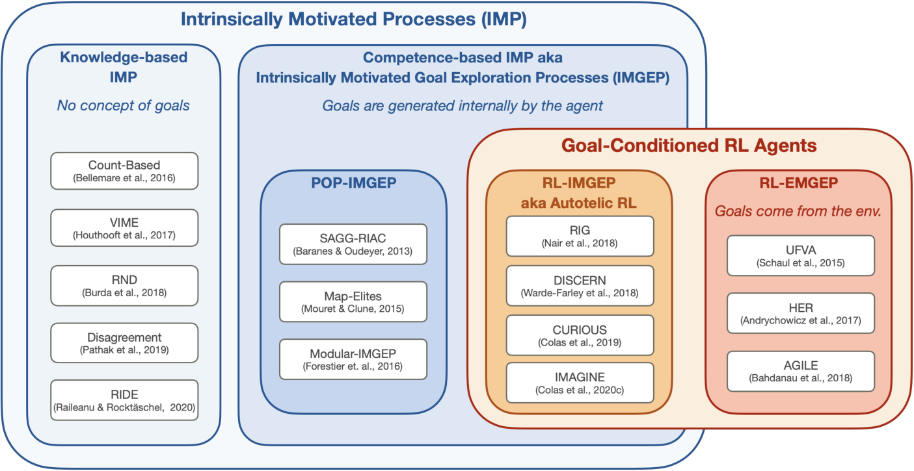
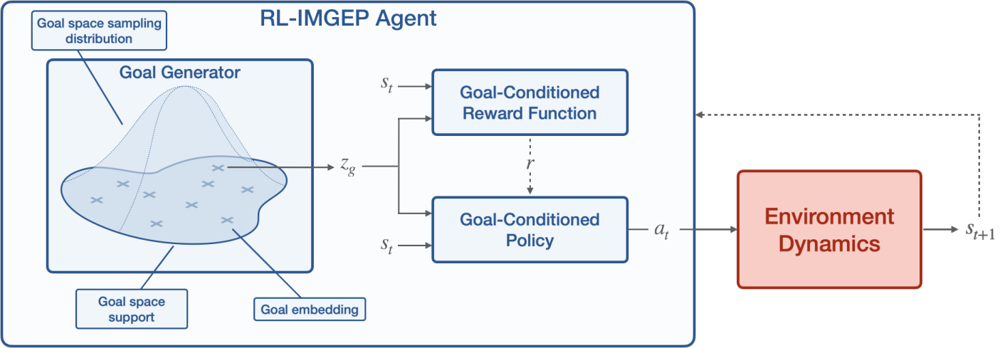
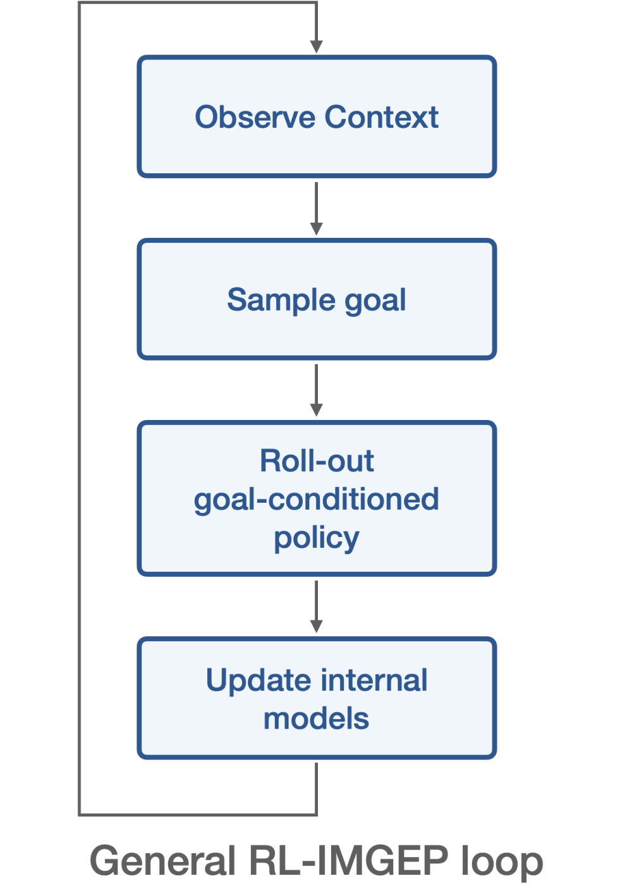
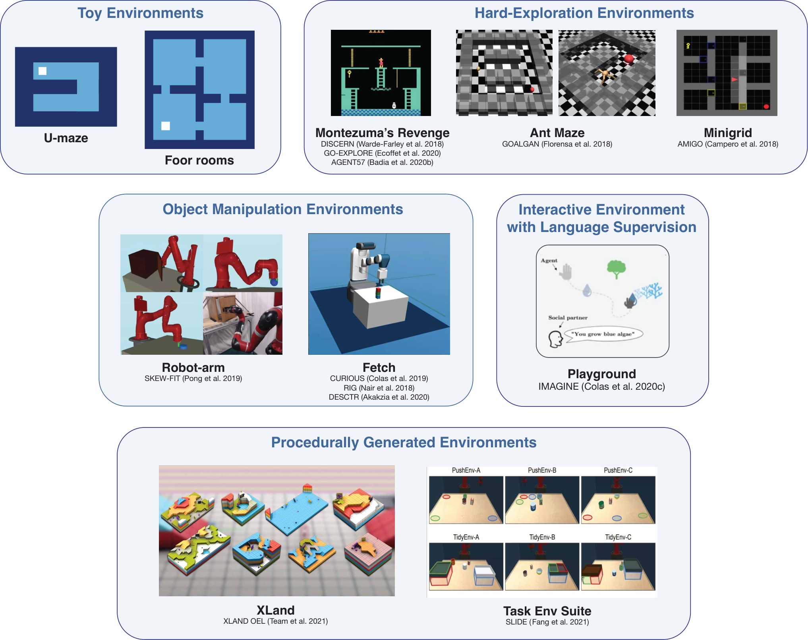

Autotelic Agents with Intrinsically Motivated Goal-Conditioned Reinforcement Learning:
A Short Survey
Abstract
Building autonomous machines that can explore open-ended environments, discover possible interactions and build repertoires of skills is a general objective of artificial intelligence. Developmental approaches argue that this can only be achieved by autotelic agents: intrinsically motivated learning agents that can learn to represent, generate, select and solve their own problems. In recent years, the convergence of developmental approaches with deep reinforcement learning (rl) methods has been leading to the emergence of a new field: developmental reinforcement learning. Developmental rl is concerned with the use of deep rl algorithms to tackle a developmental problem — the intrinsically motivated acquisition of open-ended repertoires of skills. The self-generation of goals requires the learning of compact goal encodings as well as their associated goal-achievement functions. This raises new challenges compared to standard rl algorithms originally designed to tackle pre-defined sets of goals using external reward signals. The present paper introduces developmental rl and proposes a computational framework based on goal-conditioned rl to tackle the intrinsically motivated skills acquisition problem. It proceeds to present a typology of the various goal representations used in the literature, before reviewing existing methods to learn to represent and prioritize goals in autonomous systems. We finally close the paper by discussing some open challenges in the quest of intrinsically motivated skills acquisition.
1 Introduction
Building autonomous machines that can explore large environments, discover interesting interactions and learn open-ended repertoires of skills is a long-standing goal in artificial intelligence. Humans are remarkable examples of this lifelong, open-ended learning. They learn to recognize objects and crawl as infants, then learn to ask questions and interact with peers as children. Across their lives, humans build a large repertoire of diverse skills from a virtually infinite set of possibilities. What is most striking, perhaps, is their ability to invent and pursue their own problems, using internal feedback to assess completion. We would like to build artificial agents able to demonstrate equivalent lifelong learning abilities.
We can think of two approaches to this problem: developmental approaches, in particular developmental robotics, and reinforcement learning (rl). Developmental robotics takes inspirations from artificial intelligence, developmental psychology and neuroscience to model cognitive processes in natural and artificial systems ( ?, ?). Following the idea that intelligence should be embodied, robots are often used to test learning models. Reinforcement learning, on the other hand, is the field interested in problems where agents learn to behave by experiencing the consequences of their actions under the form of rewards and costs. As a result, these agents are not explicitly taught, they need to learn to maximize cumulative rewards over time by trial-and-error ( ?). While developmental robotics is a field oriented towards answering particular questions around sensorimotor, cognitive and social development (e.g. how can we model language acquisition?), reinforcement learning is a field organized around a particular technical framework and set of methods.
Now powered by deep learning optimization methods leveraging the computational efficiency of large computational clusters, rl algorithms have recently achieved remarkable results including, but not limited to, learning to solve video games at a super-human level ( ?), to beat chess and go world players ( ?), or even to control stratospheric balloons in the real world ( ?).
Although standard rl problems often involve a single agent learning to solve a unique task, rl researchers extended rl problems to multi-goal rl problems. Instead of pursuing a single goal, agents can now be trained to pursue goal distributions ( ?, ?, ?). As the field progresses, new goal representations emerge: from the specific goal states to the high-dimensional goal images or the abstract language-based goals ( ?). However, most approaches still fall short of modeling the learning abilities of natural agents because they train them to solve predefined sets of tasks, via external and hand-defined learning signals.
Developmental robotics directly aims to model children learning and, thus, takes inspiration from the mechanisms underlying autonomous behaviors in humans. Most of the time, humans are not motivated by external rewards but spontaneously explore their environment to discover and learn about what is around them. This behavior seems to be driven by intrinsic motivations (ims) a set of brain processes that motivate humans to explore for the mere purpose of experiencing novelty, surprise or learning progress ( ?, ?, ?, ?, ?).
The integration of ims into artificial agents thus seems to be a key step towards autonomous learning agents ( ?, ?). In developmental robotics, this approach enabled sample efficient learning of high-dimensional motor skills in complex robotic systems ( ?), including locomotion ( ?, ?), soft object manipulation ( ?, ?), visual skills ( ?) and nested tool use in real-world robots ( ?). Most of these approaches rely on population-based optimization algorithms, non-parametric models trained on datasets of (policy, outcome) pairs. Population-based algorithms cannot leverage automatic differentiation on large computational clusters, often demonstrate limited generalization capabilities and cannot easily handle high-dimension perceptual spaces (e.g. images) without hand-defined input pre-processing. For these reasons, developmental robotics could benefit from new advances in deep rl.
Recently, we have been observing a convergence of these two fields, forming a new domain that we propose to call developmental reinforcement learning, or more broadly developmental artificial intelligence. Indeed, rl researchers now incorporate fundamental ideas from the developmental robotics literature in their own algorithms, and reversely developmental robotics learning architecture are beginning to benefit from the generalization capabilities of deep rl techniques. These convergences can mostly be categorized in two ways depending on the type of intrinsic motivation (ims) being used ( ?):
- •
Knowledge-based IMs are about prediction. They compare the situations experienced by the agent to its current knowledge and expectations, and reward it for experiencing dissonance (or resonance). This family includes ims rewarding prediction errors ( ?, ?), novelty ( ?, ?, ?), surprise ( ?), negative surprise ( ?), learning progress ( ?, ?) or information gains ( ?), see a review in ? (?). This type of ims is often used as an auxiliary reward to organize the exploration of agents in environments characterized by sparse rewards. It can also be used to facilitate the construction of world models ( ?, ?, ?).
- •
Competence-based IMs, on the other hand, are about control. They reward agents to solve self-generated problems, to achieve self-generated goals. In this category, agents need to represent, select and master self-generated goals. As a result, competence-based ims were often used to organize the acquisition of repertoires of skills in task-agnostic environments ( ?, ?, ?, ?, ?, ?, ?, ?, ?, ?). Just like knowledge-based ims, competence-based ims organize the exploration of the world and, thus, might be used to train world models ( ?, ?) or facilitate learning in sparse reward settings ( ?). We propose to use the adjective autotelic, from the Greek auto (self) and telos (end, goal), to characterize agents that are intrinsically motivated to represent, generate, pursue and master their own goals (i.e. that are both intrinsically motivated and goal-conditioned).
rl algorithms using knowledge-based ims leverage ideas from developmental robotics to solve standard rl problems. On the other hand, rl algorithms using competence-based ims organize exploration around self-generated goals and can be seen as targeting a developmental robotics problem: the open-ended and self-supervised acquisition of repertoires of diverse skills.
Intrinsically Motivated Goal Exploration Processes (imgep) is the family of autotelic algorithms that bake competence-based ims into learning agents ( ?). imgep agents generate and pursue their own goals as a way to explore their environment, discover possible interactions and build repertoires of skills. This framework emerged from the field of developmental robotics ( ?, ?, ?, ?) and originally leveraged population-based learning algorithms (pop-imgep) ( ?, ?, ?, ?).
Recently, goal-conditioned rl agents were also endowed with the ability to generate and pursue their own goals and learn to achieve them via self-generated rewards. We call this new set of autotelic methods rl-imgeps. In contrast, one can refer to externally-motivated goal-conditioned rl agents as rl-emgeps.

This paper proposes a formalization and a review of the rl-imgep algorithms at the convergence of rl methods and developmental robotics objectives. Figure 1 proposes a visual representation of intrinsic motivations approaches (knowledge-based ims vs competence-based ims or imgeps) and goal-conditioned rl (externally vs intrinsically motivated). Their intersection is the family of autotelic algorithms that train agents to generate and pursue their own goals by training goal-conditioned policies.
We define goals as the combination of a compact goal representation and a goal-achievement function to measure progress. This definition highlights new challenges for autonomous learning agents. While traditional rl agents only need to learn to achieve goals, rl-imgep agents also need to learn to represent them, to generate them and to measure their own progress. After learning, the resulting goal-conditioned policy and its associated goal space form a repertoire of skills, a repertoire of behaviors that the agent can represent and control. We believe organizing past goal-conditioned rl algorithms at the convergence of developmental robotics and rl into a common classification and towards the resolution of a common problem will help organize future research.
Scope of the survey.
We are interested in algorithms from the rl-imgep family as algorithmic tools to enable agents to acquire repertoires of skills in an open-ended and self-supervised setting. Externally motivated goal-conditioned rl approaches do not enable agents to generate their own goals and thus cannot be considered autotelic (imgeps). However, these approaches can often be converted into autotelic rl-imgeps by integrating the goal generation process within the agent. For this reason, we include some rl-emgeps approaches when they present interesting mechanisms that can directly be leveraged in autotelic agents.
What is not covered.
This survey does not discuss some related but distinct approaches such as multi-task rl ( ?), rl with auxiliary tasks ( ?, ?) and rl with knowledge-based ims ( ?, ?, ?). None of these approaches do represent goals or see the agent’s behavior affected by goals. The subject of intrinsically motivated goal-conditioned rl also relates to transfer learning and curriculum learning. This survey does not cover transfer learning approaches, but interested readers can refer to ? (?). It discusses automatic curriculum learning approaches that organize the generation of goals according to the agent’s abilities in Section 6 but, for a broader picture on the topic, readers can refer to the recent review ? (?). Finally, this survey does not review policy learning methods but only focuses on goal-related mechanisms. Indeed, the choice of mechanisms to learn to represent and select goals is somewhat orthogonal to the algorithms used to learn to achieve them. Since the policy learning algorithms used in rl-imgep architectures do not differ significantly from standard rl and goal-conditioned rl approaches, this survey focuses on goal-related mechanisms, specific to rl-imgeps.
Survey organization.
We start by presenting some background on the formalization of rl and multi-goal rl problems and the corresponding algorithms to solve them (Section 2). We then build on these foundations to formalize the intrinsially motivated skills acquisition problem and propose a computational framework to tackle it: rl-based intrinsically motivated goal exploration processes (Section 3). Once this is done, we organize the surveyed literature along three axes: 1) What are the different types of goal representations? (Section 4); 2) How can we learn goal representations? (Section 5) and 3) How can we prioritize goal selection? (Section 6). We finally close the survey on a discussion of open challenges for developmental reinforcement learning (Section 7).
2 Background: RL, Multi-Goal RL Problems and Their Solutions
This sections presents background information on the rl problem, the multi-goal rl problem and the families of algorithms used to solve them. This will serve as a foundation to define the intrinsically motivated skill acquisition problem and introduce the rl-based intrinsically motivated goal exploration process framework to solve it (rl-imgep, Section 3).
2.1 The Reinforcement Learning Problem
In a reinforcement learning (rl) problem, the agent learns to perform sequences of actions in an environment so as to maximize some notion of cumulative reward ( ?). rl problems are commonly framed as Markov Decision Processes (mdps): ( ?). The agent and its environment, as well as their interaction dynamics are defined by the first components , where describes the current state of the agent-environment interaction and is the distribution over initial states. The agent can interact with the environment through actions . Finally, the dynamics are characterized by the transition function that dictates the distribution of the next state from the current state and action .
The objective of the agent in this environment is defined by the remaining component of the mdp: . is the reward function, it computes a reward for any transition: . Note that, in a traditional rl problem, the agent only receives the rewards corresponding to the transitions it experiences but does not have access to the function itself. The objective of the agent is to maximize the cumulative reward computed over complete episodes. When computing the aggregation of rewards, we often introduce discounting and give smaller weights to delayed rewards. is then computed as with being a constant discount factor in . Each instance of an mdp implements an rl problem, also called a task.
2.2 Defining Goals for Reinforcement Learning
This section takes inspiration from the notion of goal in psychological research to inform the formalization of goals for reinforcement learning.
Goals in psychological research.
Working on the origin of the notion goal and its use in past psychological research, ? (?) propose a general definition:
A goal is a cognitive representation of a future object that the organism is committed to approach or avoid ( ?).
Because goals are cognitive representations, only animate organisms that represent goals qualify as goal-conditioned. Because this representation relates to a future object, goals are cognitive imagination of future possibilities: goal-conditioned behavior is proactive, not reactive. Finally, organisms commit to their goal, their behavior is thus influenced directly by this cognitive representation.
Generalized goals for reinforcement learning.
rl algorithms seem to be a good fit to train such goal-conditioned agents. Indeed, rl algorithms train learning agents (organisms) to maximize (approach) a cumulative (future) reward (object). In rl, goals can be seen as a set of constraints on one or several consecutive states that the agent seeks to respect. These constraints can be very strict and characterize a single target point in the state space (e.g. image-based goals) or a specific sub-space of the state space (e.g. target x-y coordinate in a maze, target block positions in manipulation tasks). They can also be more general, when expressed by language for example (e.g. ’find a red object or a wooden one’).
To represent these goals, rl agents must be able to 1) have a compact representation of them and 2) assess their progress towards it. This is why we propose the following formalization for rl goals: each goal is a pair where is a compact goal parameterization or goal embedding and is a goal-achievement function measuring progress towards the goal. The set of goal-achievement function can be represented as a single goal-parameterized or goal-conditioned reward function such that . With this definition we can express a diversity of goals, see Section 4 and Table .
The goal-achievement function and the goal-conditioned policy both assign meaning to a goal. The former defines what it means to achieve the goal, it describes how the world looks like when it is achieved. The latter characterizes the process by which this goal can be achieved; what the agent needs to do to achieve it. In this search for the meaning of a goal, the goal embedding can be seen as the map: the agent follows this map and via the two functions above, experiences the meaning of the goal.
2.3 The Multi-Goal Reinforcement Learning Problem
By replacing the unique reward function by the space of reward functions , rl problems can be extended to handle multiple goals: . The term goal should not be mistaken for the term task, which refers to a particular mdp instance. As a result, multi-task rl refers to rl algorithms that tackle a set of mdps that can differ by any of their components (e.g. , , , etc.). The multi-goal rl problem can thus be seen as the particular case of the multi-task rl problem where mdps differ by their reward functions. In the standard multi-goal rl problem, the set of goals — and thus the set of reward functions — is pre-defined by engineers. The experimenter sets goals to the agent, and provides the associated reward functions.
2.4 Solving the RL Problem with RL Algorithms and Related Approaches
The rl problem can be tackled by several types of optimization methods. In this survey, we focus on rl algorithms, as they currently demonstrate stronger capacities in multi-goal problems ( ?, ?, ?, ?, ?, ?, ?, ?, ?, ?).
rl algorithms use transitions collected via interactions between the agent and its environment to train a policy : a function generating the next action based on the current state so as to maximize a cumulative function of rewards. Deep rl (drl) is the extension of rl algorithms that leverage deep neural networks as function approximators to represent policies, reward and value functions. It has been powering most recent breakthrough in rl ( ?, ?, ?, ?, ?, ?, ?, ?, ?, ?).
Other sets of methods can also be used to train policies. Imitation Learning (il) leverages demonstrations, i.e. transitions collected by another entity (e.g. ?, ?). Evolutionary Computing (ec) is a group of population-based approaches where populations of policies are trained to maximize cumulative rewards using episodic samples (e.g. ?, ?, ?, ?, ?, ?, ?). Finally, in model-based rl approaches, agents learn a model of the transition function . Once learned, this model can be used to perform planning towards reward maximization or train a policy via rl using imagined samples (e.g. ? (?, ?, ?, ?, ?, ?), see two recent reviews in ? (?, ?)).
This surveys focuses on goal-related mechanisms that are mostly orthogonal to the choice of underlying optimization algorithm. In practice, however, most of the research in that space uses drl methods.
2.5 Solving the Multi-Goal RL Problem with Goal-Conditioned RL Algorithms
Goal-conditioned agents see their behavior affected by the goal they pursue. This is formalized via goal-conditioned policies, that is policies which produce actions based on the environment state and the agent’s current goal: , where is the space of goal embeddings corresponding to the goal space ( ?). Note that ensembles of policies can also be formalized this way, via a meta-policy that retrieves the particular policy from a one-hot goal embedding (e.g. ?, ?).
The idea of using a unique rl agent to target multiple goals dates back to ? (?). Later, the horde architecture proposed to use interaction experience to update one value function per goal, effectively transferring to all goals the knowledge acquired while aiming at a particular one ( ?). In these approaches, one policy is trained for each of the goals and the data collected by one can be used to train others.
Building on these early results, ? (?) introduced Universal Value Function Approximators (uvfa). They proposed to learn a unique goal-conditioned value function and goal-conditioned policy to replace the set of value functions learned in horde. Using neural networks as function approximators, they showed that uvfas enable transfer between goals and demonstrate strong generalization to new goals.
The idea of hindsight learning further improves knowledge transfer between goals ( ?, ?). Learning by hindsight, agents can reinterpret a past trajectory collected while pursuing a given goal in the light of a new goal. By asking themselves, what is the goal for which this trajectory is optimal?, they can use the originally failed trajectory as an informative trajectory to learn about another goal, thus making the most out of every trajectory ( ?). This ability dramatically increases the sample efficiency of goal-conditioned algorithms and is arguably an important driver of the recent interest in goal-conditioned rl approaches.
3 The Intrinsically Motivated Skills Acquisition Problem and the RL-IMGEP Framework
This section builds on the multi-goal rl problem to formalize the intrinsically motivated skills acquisition problem, in which goals are not externally provided to the agents but must be represented and generated by them (Section 3.1). The following section discusses how to evaluate competency in such an open problem (Section 3.2). Finally, we then propose an extension of the goal-conditioned rl framework to tackle this problem: rl-based intrinsically motivated goal exploration process framework (rl-imgep, Section 3.3).
3.1 The Intrinsically Motivated Skills Acquisition Problem
In the intrinsically motivated skills acquisition problem, the agent is set in an open-ended environment without any pre-defined goal and needs to acquire a repertoire of skills. Here, a skill is defined as the association of a goal embedding and the policy to reach it . A repertoire of skills is thus defined as the association of a repertoire of goals with a goal-conditioned policy trained to reach them . The intrinsically motivated skills acquisition problem can now be modeled by a reward-free mdp that only characterizes the agent, its environment and their possible interactions. Just like children, agents must be autotelic, i.e. they should learn to represent, generate, pursue and master their own goals.
3.2 Evaluating RL-IMGEP Agents
Evaluating agents is often trivial in reinforcement learning. Agents are trained to maximize one or several pre-coded reward functions — the set of possible interactions is known in advance. One can measure generalization abilities by computing the agent’s success rate on a held-out set of testing goals. One can measure exploration abilities via several metrics such as the count of task-specific state visitations.
In contrast, autotelic agents evolve in open-ended environments and learn to represent and form their own set of skills. In this context, the space of possible behaviors might quickly become intractable for the experimenter, which is perhaps the most interesting feature of such agents. For these reasons, designing evaluation protocols is not trivial.
The evaluation of such systems raises similar difficulties as the evaluation of task-agnostic content generation systems like Generative Adversarial Networks (gan) ( ?) or self-supervised language models ( ?, ?). In both cases, learning is task-agnostic and it is often hard to compare models in terms of their outputs (e.g. comparing the quality of gan output images, or comparing output repertoires of skills in autotelic agents).
One can also draw parallel with the debate on the evaluation of open-ended systems in the field of open-ended evolution ( ?, ?, ?). In both cases, a good system is expected to generate more and more original solutions such that its output cannot be predicted in advance. But what does original mean, precisely? ? (?) argues that subjectivity has a role to play in the evaluation of open-ended systems. Indeed, the notion of interestingness is tightly coupled with that of open-endedness. What we expect from our open-ended systems, and of our rl-imgep agents in particular, is to generate more and more behaviors that we deem interesting. This is probably why the evaluation of content generators often include human studies. Our end objective is to generate interesting artefacts for us; we thus need to evaluate open-ended processes ourselves, subjectively.
Our end goal would be to interact with trained rl-imgep directly, to set themselves goals and test their abilities. The evaluation would need to adapt to the agent’s capabilities. As Einstein said “If you judge a fish by its ability to climb a tree, it will live its whole life believing that it is stupid.”. rl-imgep need to be evaluated by humans looking for their area of expertise, assessing the width and depth of their capacities in the world they were trained in. This said, science also requires more objective evaluation metrics to facilitate the comparison of existing methods and enable progress. Let us list some evaluation methods measuring the competency of agents via proxies:
- •
Measuring exploration: one can compute task-agnostic exploration proxies such as the entropy of the visited state distribution, or measures of state coverage (e.g. coverage of the high-level x-y state space in mazes) ( ?). Exploration can also be measured as the number of interactions from a set of interesting interactions defined subjectively by the experimenter (e.g. interactions with objects in ?).
- •
Measuring generalization: The experimenter can subjectively define a set of relevant target goals and prevent the agent from training on them. Evaluating agents on this held-out set at test time provides a measure of generalization ( ?), although it is biased towards what the experimenter assesses as relevant goals.
- •
Measuring transfer learning: The intrinsically motivated exploration of the environment can be seen as a pre-training phase to bootstrap learning in a subsequent downstream task. In the downstream task, the agent is trained to achieve externally-defined goals. We report its performance and learning speed on these goals. This is akin to the evaluation of self-supervised language models, where the reported metrics evaluate performance in various downstream tasks (e.g. ?). In this evaluation setup, autotelic agents can be compared to task-specific agents. Ideally, autotelic agents should benefit from their open-ended learning process to outperform task-specific agents on their own tasks. This said, performance on downstream tasks remains an evaluation proxy and should not be seen as the explicit objective of the skill discovery phase. Indeed, in humans, skill discovery processes do not target any specific future task, but emerged from a natural evolutionary process maximizing reproductive success, see a discussion in ? (?).
- •
Opening the black-box: Investigating internal representations learned during intrinsically motivated exploration is often informative. One can investigate properties of the goal generation system (e.g. does it generate out-of-distribution goals?), investigate properties of the goal embeddings (e.g. are they disentangled?). One can also look at the learning trajectories of the agents across learning, especially when they implement their own curriculum learning (e.g. ?, ?, ?, ?, ?).
- •
Measuring robustness: Autonomous learning agents evolving in open-ended environment should be robust to a variety of properties than can be found in the real-world. This includes very large environments, where possible interactions might vary in terms of difficulty (trivial interactions, impossible interactions, interactions whose result is stochastic thus prevent any learning progress). Environments can also include distractors (e.g. non-controllable objects) and various forms of non-stationarity. Evaluating learning algorithms in various environments presenting each of these properties allows to assess their ability to solve the corresponding challenges.
3.3 RL-Based Intrinsically Motivated Goal Exploration Processes
Until recently, the imgep family was powered by population-based algorithms (pop-imgep). The emergence of goal-conditioned rl approaches that generate their own goals gave birth to a new type of imgeps: the rl-based imgeps (rl-imgep). This section builds on traditional rl and goal-conditioned rl algorithms to give a general definition of intrinsically motivated goal-conditioned rl algorithms (rl-imgep).
rl-imgep are intrinsically motivated versions of goal-conditioned rl algorithms. They need to be equipped with mechanisms to represent and generate their own goals in order to solve the intrinsically motivated skills acquisition problem, see Figure 2. Concretely, this means that, in addition to the goal-conditioned policy, they need to learn: 1) to represent goals by compact embeddings ; 2) to represent the support of the goal distribution, also called goal space ; 3) a goal distribution from which targeted goals are sampled ; 4) a goal-conditioned reward function . In practice, only a few architectures tackle the four learning problems above.
In this survey, we call autotelic any architecture where the agent selects its own goals (learning problem 3). Simple autotelic agents assume pre-defined goal representations (1), the support of the goals distribution (2) and goal-conditioned reward functions (4). As autotelic architectures tackle more of the 4 learning problems, they become more and more advanced. As we will see in the following sections, many existing works in goal-conditioned rl can be formalized as autotelic agents by including goal sampling mechanisms within the definition of the agent.
With a developmental perspective, one can reinterpret existing work through the autotelic rl framework. Let us take an example. The agent57 algorithm automatically selects a parameter to balance the intrinsic and extrinsic rewards of the agent at the beginning of each training episode ( ?). The authors do not mention the concept of goal but instead present this mechanism as a form of reward shaping technique independent from the agent. With a developmental perspective, one can interpret the mixing parameter as a goal embedding. Replacing the sampling mechanism within the boundaries of the agent, agent57 becomes autotelic. It is intrinsically motivated to sample and target its own goals; i.e. to define its own reward functions (here mixtures of intrinsic and extrinsic reward functions).
Algorithm 1 details the pseudo-code of rl-imgep algorithms. Starting from randomly initialized modules and memory, rl-imgep agents enter a standard rl interaction loop. They first observe the context (initial state), then sample a goal from their goal sampling policy. Then starts the proper interaction. Conditioned on their current goal embedding, they act in the world so as to reach their goal, i.e. to maximize the cumulative rewards generated by the goal-conditioned reward function. After the interaction, the agent can update all its internal models. It learns to represent goals by updating its goal embedding function and goal-conditioned reward function, and improves its behavior towards them by updating its goal-conditioned policy.

This surveys focuses on the mechanisms specific to rl-imgep agents, i.e. mechanisms that handle the representation, generation and selection of goals. These mechanisms are mostly orthogonal to the question of how to reach the goals themselves, which often relies on existing goal-conditioned algorithms, but can also be powered by imitation learning, evolutionary algorithms or other control and planning methods. Section 4 first presents a typology of goal representations used in the literature, before Sections 5 and 6 cover existing methods to learn to represent and prioritize goals respectively.

4 A Typology of Goal Representations in the Literature
Now that we defined the problem of interest and the overall framework to tackle it, we can start reviewing relevant approaches from the literature and how they fit in this framework. This section presents a typology of the different kinds of goal representations found in the literature. Each goal is represented by a pair: 1) a goal embedding and 2) a goal-conditioned reward function. Figure 3 also provides visuals of the main environments used by the autotelic approaches presented in this paper.
4.1 Goals as Choices Between Multiple Objectives
Goals can be expressed as a list of different objectives the agent can choose from.
Goal embedding.
In that case, goal embeddings are one-hot encodings of the current objective being pursued among the objectives available. is the one-hot vector: . This is the case in ? (?, ?, ?).
Reward function.
The goal-conditioned reward function is a collection of distinct reward functions if . In ? (?) and ? (?), each reward function gives a positive reward when the agent reaches the corresponding object: reaching guitars and keys in the first case, monsters and torches in the second.
4.2 Goals as Target Features of States
Goals can be expressed as target features of the state the agent desires to achieve.
Goal embedding.
In this scenario, a state representation function maps the state space to an embedding space . Goal embeddings are target points in that the agent should reach. In manipulation tasks, can be target block coordinates ( ?, ?, ?, ?, ?, ?, ?, ?, ?). In navigation tasks, can be target agent positions (e.g. in mazes, ?, ?). Agent can also target image-based goals. In that case, the state representation function is usually implemented by a generative model trained on experienced image-based states and goal embeddings can be sampled from the generative model or encoded from real images ( ?, ?, ?, ?, ?, ?, ?, ?, ?, ?, ?).
Reward function.
For this type of goals, the reward function is based on a distance metric . One can define a dense reward as inversely proportional to the distance between features of the current state and the target goal embedding: (e.g. ?). The reward can also be sparse: positive whenever that distance falls below a pre-defined threshold: , otherwise.
4.3 Goals as Abstract Binary Problems
Some goals cannot be expressed as target state features but can be represented by binary problems, where each goal expresses as set of constraint on the state (or trajectory) such that these constraints are either verified or not (binary goal achievement).
Goal embeddings.
In binary problems, goal embeddings can be any expression of the set of constraints that the state should respect. ? (?, ?) both propose a pre-defined discrete state representation. These representations lie in a finite embedding space so that goal completion can be asserted when the current embedding equals the goal embedding . Another way to express sets of constraints is via language-based predicates. A sentence describes the constraints expressed by the goal and the state or trajectory either verifies them, or does not ( ?, ?, ?, ?, ?, ?, ?, ?, ?), see ( ?) for a recent review. Language can easily characterize generic goals such as “grow any blue object” ( ?), relational goals like “sort objects by size” ( ?), “put the cylinder in the drawer” ( ?) or even sequential goals “Open the yellow door after you open a purple door” ( ?). When goals can be expressed by language sentences, goal embeddings are usually language embeddings learned jointly with either the policy or the reward function. Note that, although rl goals always express constraints on the state, we can imagine time-extended goals where constraints are expressed on the trajectory (see a discussion in Section 7.1).
Reward function.
The reward function of a binary problem can be viewed as a binary classifier that evaluates whether state (or trajectory ) verifies the constraints expressed by the goal semantics (positive reward) or not (null reward). This binary classification setting has directly been implemented as a way to learn language-based goal-conditioned reward functions in ? (?) and ? (?). Alternatively, the setup described in ? (?) proposes to turn binary problems expressed by language-based goals into goals as specific target features. To this end, they train a language-conditioned goal generator that produces specific target features verifying constraints expressed by the binary problem. As a result, this setup can use a distance-based metric to evaluate the fulfillment of a binary goal.
4.4 Goals as a Multi-Objective Balance
Some goals can be expressed, not as desired regions of the state or trajectory space but as more general objectives that the agent should maximize. In that case, goals can parameterize a particular mixture of multiple objectives that the agent should maximize.
Goal embeddings.
Here, goal embeddings are simply sets of weights balancing the different objectives where is the weights applied to objective and is the number of objectives. Note that, when and , the agent can decide to pursue any of the objective alone. In Never Give Up, for example, rl agents are trained to maximize a mixture of extrinsic and intrinsic rewards ( ?). The agent can select the mixing parameter that can be viewed as a goal. Building on this approach, agent57 adds a control of the discount factor, effectively controlling the rate at which rewards are discounted as time goes by ( ?).
Reward function.
When goals are represented as a balance between multiple objectives, the associated reward function cannot be represented neither as a distance metric, nor as a binary classifier. Instead, the agent needs to maximize a convex combination of the objectives: where is the of objectives and is the set of weights.
4.5 Goal-Conditioning
Now that we described the different types of goal embeddings found in the literature, remains the question of how to condition the agent’s behavior — i.e. the policy — on them. Originally, the uvfa framework proposed to concatenate the goal embedding to the state representation to form the policy input. Recently, other mechanisms have emerged. When language-based goals were introduced, ? (?) proposed the gated-attention mechanism where the state features are linearly scaled by attention coefficients computed from the goal representation : , where is the Hadamard product. Later, the Feature-wise Linear Modulation (film) approach ( ?) generalized this principle to affine transformations: . Alternatively, ? (?) came up with Neural Module Networks, a mechanism that leverages the linguistic structure of goals to derive a symbolic program that defines how states should be processed ( ?).
4.6 Conclusion
This section presented a diversity of goal representations, corresponding to a diversity of reward functions architectures. However, we believe this represents only a small fraction of the diversity of goal types that humans pursue. Section 7 discusses other goal representations that rl algorithms could target.

5 How to Learn Goal Representations?
The previous section discussed various types of goal representations. Autotelic agents actually need to learn these goal representations. While individual goals are represented by their embeddings and associated reward functions, representing multiple goals also requires the representation of the support of the goal space, i.e. how to represent the collection of valid goals that the agent can sample from, see Figure 2. This section reviews different approaches from the literature.
5.1 Assuming Pre-Defined Goal Representation
Most approaches tackle the multi-goal rl problem, where goal spaces and associated rewards are pre-defined by the engineer and are part of the task definition. Navigation and manipulation tasks, for example, pre-define goal spaces (e.g. target agent position and target block positions respectively) and use the Euclidean distance to compute rewards ( ?, ?, ?, ?, ?, ?, ?, ?, ?, ?). ? (?, ?) hand-define abstract state representation and provide positive rewards when these match target goal representations. Finally, ? (?) hand-define a large combinatorial goal space, where goals are Boolean formulas of predicates such as being near, on, seeing, and holding, as well as their negations, with arguments taken as entities such as objects, players, and floors in procedurally-generated multi-player worlds. In all these works, goals can only be sampled from a pre-defined bounded space. This falls short of solving the intrinsically motivated skills acquisition problem. The next sub-section investigates how goal representations can be learned.
5.2 Learning Goal Embeddings
Some approaches assume the pre-existence of a goal-conditioned reward function, but learn to represent goals by learning goal embeddings. This is the case of language-based approaches, which receive rewards from the environment (thus are rl-emgep), but learn goal embeddings jointly with the policy during policy learning ( ?, ?, ?, ?, ?, ?, ?). When goals are target images, goal embeddings can be learned via generative models of states, assuming the reward to be a fixed distance metric computed in the embedding space ( ?, ?, ?, ?).
5.3 Learning the Reward Function
A few approaches go even further and learn their own goal-conditioned reward function. ? (?, ?) learn language-conditioned reward functions from an expert dataset or from language descriptions of autonomous exploratory trajectories respectively. However, the agile approach from ? (?) does not generate its own goals.
In the domain of image-based goals, ? (?, ?) learn a distance metric estimating the square root of the number of steps required to move from any state to any and generates internal signals to reward agents for getting closer to their target goals. ? (?) learn a similarity metric in the space of controllable aspects of the environment that is based on a mutual information objective between the state and the goal state .
? (?) compute a distance metric representing the ability of the agent to reach one state from another using the Laplacian of the transition dynamics graph, where nodes are states and edges are actions. More precisely, they use the eigenvectors of the Laplacian matrix of the graph given by the states of the environment as basis to compute the L2 distance towards a goal configuration.
Another way to learn reward function and their associated skills is via empowerment methods ( ?, ?, ?, ?, ?, ?, ?). Empowerment methods aim at maximizing the mutual information between the agent’s actions or goals and its experienced states. Recent methods train agents to develop a set of skills leading to maximally different areas of the state space. Agents are rewarded for experiencing states that are easy to discriminate, while a discriminator is trained to better infer the skill from the visited states. This discriminator acts as a skill-specific reward function.
All these methods set their own goals and learn their own goal-conditioned reward function. For these reasons, they can be considered as complete autotelic rl algorithms.
5.4 Learning the Support of the Goal Distribution
The previous sections reviewed several approaches to learn goal embeddings and reward functions. To represent collections of goals, one also needs to represent the support of the goal distribution — which embeddings correspond to valid goals and which do not.
Most approaches consider a pre-defined, bounded goal space in which any point is a valid goal (e.g. target positions within the boundaries of a maze, target block positions within the gripper’s reach) ( ?, ?, ?, ?, ?, ?, ?, ?, ?). However, not all approaches assume pre-defined goal spaces.
The option framework ( ?, ?) proposes to train a high-level policy to compose sequences of behaviors originating from learned low-level policies called options. Each option can be seen as a goal-directed policy where the goal embedding is represented by its index in the set of options. When options are policies aiming at specific states, option discovery methods learn the support of the goal space; they learn which goal–state are most useful to organize higher-level behaviors. Bottleneck states are often targeted as good sub-goals. ? (?) propose to detect states that are common to multiple successful trajectories. ? (?) propose to select state with maximal relative novelty, i.e. when the average novelty of following states is higher than the average novelty of previous ones. ? (?) propose to leverage measures from graph theory.
The option-critic framework then opened the way to a wealth of new approaches ( ?). Among those, methods based on successor features ( ?, ?, ?) propose to learn the option space using reward embeddings. With successor features, the Q-value of a goal can be expressed as a linear combination of learned reward features, efficiently decoupling the rewards from the environmental dynamics. In a multi-goal setting, these methods pair each goal with a reward embedding and use generalized policy improvement to train a set of policies that efficiently share relevant reward features across goals. These methods provide key mechanisms to learn to discover and represent sub-goals. However, they do not belong to the rl-imgep family since high-level goals are externally provided.
Some approaches use the set of previously experienced representations to form the support of the goal distribution ( ?, ?, ?). In ? (?), a Generative Adversarial Network (gan) is trained on past representations of states () to model a distribution of goals and thus its support. In the same vein, approaches handling image-based goals usually train a generative model of image states based on Variational Auto-Encoders (vae) to model goal distributions and support ( ?, ?, ?). In both cases, valid goals are the one generated by the generative model.
We saw that the support of valid goals can be pre-defined, a simple set of past representations or approximated by a generative model trained on these. In all cases, the agent can only sample goals within the convex hull of previously encountered goals (in representation space). We say that goals are within training distribution. This drastically limits exploration and the discovery of new behaviors.
Children, on the other hand, can imagine creative goals. Pursuing these goals is thought to be the main driver of exploratory play in children ( ?). This is made possible by the compositionality of language, where sentences can easily be combined to generate new ones. The imagine algorithm leverages the creative power of language to generate such out-of-distribution goals ( ?). The support of valid goals is extended to any combination of language-based goals experienced during training. They show that this mechanism augments the generalization and exploration abilities of learning agents.
In Section 6, we discuss how agents can learn to adapt the goal sampling distribution to maximize the learning progress of the agent.
5.5 Conclusion
This section presented how previous approaches tackled the problem of learning goal representations. While most approaches rely on pre-defined goal embeddings and/or reward functions, some approaches proposed to learn internal reward functions and goal embeddings jointly.
6 How to Prioritize Goal Selection?
Autotelic agents also need to select their own goals. While goals can be generated by uninformed sampling of the goal space, agents can benefit from mechanisms optimizing goal selection. In practice, this boils down to the automatic adaptation of the goal sampling distribution as a function of the agent performance.
6.1 Automatic Curriculum Learning for Goal Selection
In real-world scenarios, goal spaces can be too large for the agent to master all goals in its lifetime. Some goals might be trivial, others impossible. Some goals might be reached by chance sometimes, although the agent cannot make any progress on them. Some goals might be reachable only after the agent mastered more basic skills. For all these reasons, it is important to endow autotelic agents learning in open-ended scenarios with the ability to optimize their goal selection mechanism. This ability is a particular case of automatic curriculum learning acl applied for goal selection: mechanisms that organize goal sampling so as to maximize the long-term performance improvement (distal objective). As this objective is usually not directly differentiable, curriculum learning techniques usually rely on a proximal objective. In this section, we look at various proximal objectives used in automatic curriculum learning strategies to organize goal selection. Interested readers can refer to ? (?), which present a broader review of acl methods for rl. Note that knowledge-based ims can rely on similar proxies but focus on the optimization of the experienced states instead of on the selection of goals (e.g. maximize next-state prediction errors). A recent review of knowledge-based ims approaches can be found in ? (?).
Intermediate or uniform difficulty.
Intermediate difficulty has been used as a proxy for long-term performance improvement, following the intuition that focusing on goals of intermediate difficulty results in short-term learning progress that will eventually turn into long-term performance increase. goalgan assigns feasibility scores to goals as the proportion of time the agents successfully reaches it ( ?). Based on this data, a gan is trained to generate goals of intermediate difficulty, whose feasibility scores are contained within an intermediate range. ? (?) and ? (?) train a goal policy with rl to propose challenging goals to the rl agent. The goal policy is rewarded for setting goals that are neither too easy nor impossible. In the same spirit, ? (?) use a mixture of three criteria to filter valid goals: 1) the agent has a low probability of scoring high; 2) the agent has a high probability of scoring higher than a control policy; 3) the control policy performs poorly. Finally, ? (?) select goals that maximize the disagreement in an ensemble of value functions. Value functions agree when the goals are too easy (the agent is always successful) or too hard (the agent always fails) but disagree for goals of intermediate difficulty.
? (?) propose a variant of the goalgan approach and train a goal generator to sample goals of all levels of difficulty, uniformly. This approach seems to lead to better stability and improved performance on more complex tasks compared to goalgan ( ?).
Note that measures of intermediate difficulty are sensitive to the presence of stochasticity in the environment. Indeed, goals of intermediate difficulty can be detected as such either because the agent has not yet mastered them, or because the environment makes them impossible to achieve sometimes. In the second case, the agent should not focus on them, because it cannot learn anything new. Estimating medium-term learning progress helps overcoming this problem (see below).
Novelty - diversity.
? (?, ?, ?) all bias the selection of goals towards sparse areas of the goal space. For this purpose, they train density models in the goal space. While ? (?, ?) aim at a uniform coverage of the goal space (diversity), ? (?) skew the distribution of selected goals even more, effectively maximizing novelty. ? (?) proposed to enhance these methods with a goal sampling prior focusing goal selection towards controllable areas of the goal space. Finally, ? (?) use procedural content generation (pcg) to train a task generator that produces diverse environments in which agents can explore customized skills.
These algorithms have strong connections with empowerment methods ( ?, ?, ?, ?, ?, ?, ?). Indeed, the mutual information between goals and states that empowerment methods aim to maximize can be rewritten as:
Thus, maximizing empowerment can be seen as maximizing the entropy of the goal distribution while minimizing the entropy of goals given experienced states. Algorithm that both learn to sample diverse goals and learn to represent goals with variational auto-encoders can be seen as maximizing empowerment. The recent wealth of empowerment methods, however, rarely discusses the link with autotelic agents: they do not mention the notion of goals or goal-conditioned reward functions and do not discuss the problem of goal representations ( ?, ?, ?, ?, ?). In a recent paper, ? (?) investigated these links and formalized a continuum of methods from empowerment to visual goal-conditioned approaches.
While novelty refers to the originality of a reached outcome, diversity is a term that can only be applied to a collection of these outcomes. An outcome will be said novel if it is semantically different from what exists in the set of known outcomes. A set of outcomes will be said diverse when outcomes are far from each other and cover well the space of possible outcomes. Note that agents can also express diversity in their behavior towards a unique outcome, a skill known as versatility ( ?, ?, ?, ?).
Medium-term learning progress.
The idea of using learning progress (lp) as a intrinsic motivation for artificial agents dates back to the 1990s ( ?, ?, ?, ?). At that time, however, it was used as a knowledge-based ims and rewarded progress in predictions. From 2007, ( ?) suggested to use it as a competence-based ims to reward progress in competence instead. In such approaches, agents estimate their lp in different regions of the goal space and bias goal sampling towards areas of high absolute learning progress using bandit algorithms ( ?, ?, ?, ?, ?, ?, ?, ?, ?). Such estimations attempts to disambiguate the incompetency or uncertainty the agent could resolve with more practice (epistemic) from the one it could not (aleatoric). Agents should indeed focus on goals towards which they can make progress and avoid goals that are either too easy, currently too hard, or impossible.
? (?, ?, ?) and ? (?) organize goals into modules and compute average lp measures over modules. ? (?) defines goals as a discrete set of precision requirements in a reaching task and computes lp for each requirement value. The use of absolute lp enables agents to focus back on goals for which performance decreases (due to perturbations or forgetting). ? (?) introduces the success rate in the value optimized by the bandit: , so that agents favor goals with high absolute lp and low competence.
6.2 Hierarchical Reinforcement Learning for Goal Sequencing.
Hierarchical reinforcement learning (hrl) can be used to guide the sequencing of goals ( ?, ?, ?, ?). In hrl, a high-level policy is trained via rl or planning to generate sequence of goals for a lower level policy so as to maximize a higher-level reward. This allows to decompose tasks with long-term dependencies into simpler sub-tasks. Low-level policies are implemented by traditional goal-conditioned rl algorithms ( ?, ?) and can be trained independently from the high-level policy ( ?, ?) or jointly ( ?, ?, ?). In the option framework, option can be seen as goal-directed policies that the high-level policy can choose from ( ?, ?). In that case, goal embeddings are simple indicators. Most approaches consider hand-defined spaces for the sub-goals (e.g. positions in a maze). Recent approaches propose to use the state space directly ( ?) or to learn the sub-goal space (e.g. ? (?), or with generative model of image states in ? (?)).
7 Open Challenges
This section discusses open challenges in the quest for autotelic agents tackling the intrinsically motivated skills acquisition problem.
7.1 Challenge #1: Targeting a Greater Diversity of Goals
Section 4 introduces a typology of goal representations found in the literature. The diversity of goal representations seems however limited, compared to the diversity of goals human target ( ?).
Time-extended goals.
All rl approaches reviewed in this paper consider time-specific goals, that is, goals whose completion can be assessed from any state . This is due to the Markov property requirement, where the next state and reward need to be a function of the previous state only. Time-extended goals — i.e. goals whose completion can be judged by observing a sequence of states (e.g. jump twice) — can however be considered by adding time-extended features to the state (e.g. the difference between the current state and the initial state ?). To avoid such ad-hoc state representations, one could imagine using reward function architectures that incorporate forms of memory such as Recurrent Neural Network (rnn) architectures ( ?) or Transformers ( ?). Although recurrent policies are often used in the literature ( ?, ?, ?, ?), recurrent reward functions have not been much investigated. Some work ? (?, ?) investigate the benefit of computing relations between value functions when learning predictive representations. ? (?) propose to represent the interrelation of predictions in a TD-network where nodes are predictions computed from states. The network allows to perform predictions that have complex temporal semantics. ? (?) train a RNN architecture where hidden-states are multi-step predictions. Finally, recent work by ? (?) show that agents can derive rewards from linguistic descriptions of time-extended behaviors. Time-extended goals include interactions that span over multiple time steps (e.g. shake the blue ball) and spatio-temporal references to objects (e.g. get the red ball that was on the left of the sofa yesterday).
Learning goals.
Goal-driven learning is the idea that humans use learning goals, goals about their own learning abilities as a way to simplify the realization of task goals ( ?). Here, we refer to task goals as goals that express constraints on the physical state of the agent and/or environment. On the other hand, learning goals refer to goals that express constraints on the knowledge of the agent. Although most rl approaches target task goals, one could envision the use of learning goals for rl agents.
In a way, learning-progress-based learning is a form of learning goal: as the agent favors regions of the goal space to sample its task goals, it formulates the goal of learning about this specific goal region ( ?, ?, ?, ?, ?, ?).
Embodied Question Answering problems can also be seen as using learning goals. The agent is asked a question (i.e. a learning goal) and needs to explore the environment to answer it (acquire new knowledge) ( ?, ?).
In the future, one could envision agents that set their own learning targets as sub-goals towards the resolution of harder task or learning goals, e.g. I’m going to learn about knitting so I can knit a pullover to my friend for his birthday.
Goals as optimization under selected constraints.
We discussed the representations of goals as a balance between multiple objectives. An extension of this idea is to integrate the selection of constraints on states or trajectories. One might want to maximize a given metric (e.g. walking speed), while setting various constraints (e.g. maintaining the power consumption below a given threshold or controlling only half of the motors). The agent could explore in the space of constraints, setting constraints to itself, building a curriculum on these, etc. This is partially investigated in ? (?), where the agent samples constraint-based goals in the optimization of control strategies to mitigate the economic and health costs in simulated epidemics. This approach, however, only considers constraints on minimal values for the objectives and requires the training of an additional Q-function per constraint.
Meta-diversity of goals.
Finally, autotelic agents should learn to target all these goals within the same run; to transfer their skills and knowledge between different types of goals. For instance, targeting visual goals could help the agent explore the environment and solve learning goals or linguistic goals. As the density of possible goals increases, agents can organize more interesting curricula. They can select goals in easier representation spaces first (e.g. sensorimotor spaces), then move on to target more difficult goals (e.g. in the visual space), before they can target the more abstract goals (e.g. learning goals, abstract linguistic goals).
This can take the form of goal spaces organized hierarchically at different levels of abstractions. The exploration of such complex goal spaces has been called meta-diversity ( ?). In the outer-loop of the meta-diversity search, one aims at learning a diverse set of outcome/goal representations. In the inner-loop, the exploration mechanism aims at generating a diversity of behaviors in each existing goal space. How to efficiently transfer knowledge and skills between these multi-modal goal spaces and how to efficiently organize goal selection in large multi-modal goal spaces remains an open question.
7.2 Challenge #2: Learning to Represent Diverse Goals
This survey mentioned only a handful of complete autotelic architectures. Indeed, most of the surveyed approach assume pre-existing goal embeddings or reward functions. Among the approaches that learn goal representations autonomously, we find that the learned representations are often restricted to very specific domains. Visual goal-conditioned approaches for example, learn reward functions and goal embeddings but restrict them to the visual space ( ?, ?, ?, ?, ?, ?). Empowerment methods, on the other hand, develop skills that maximally cover the state space, often restricted to a few of its dimensions (e.g. the x-y space in navigation tasks ?, ?, ?, ?).
These methods are limited to learn goal representations within a bounded, pre-defined space: the visual space, or the (sub-) state space. How to autonomously learn to represent the wild diversity of goals surveyed in Section 4 and discussed in Challenge #1 remains an open question.
7.3 Challenge #3: Imagining Creative Goals
Goal sampling methods surveyed in Section 6 are all bound to sample goals within the distribution of known effects. Indeed, the support of the goals distribution is either pre-defined (e.g. ?, ?, ?, ?) or learned using a generative model ( ?, ?, ?, ?) trained on previously experienced outcomes. On the other hand, humans can imagine creative goals beyond their past experience which, arguably, powers their exploration of the world.
In this survey, one approach opened a path in this direction. The imagine algorithm uses linguistic goal representation learned via social supervision and leverages the compositionality of language to imagine creative goals beyond its past experience ( ?). This is implemented by a simple mechanism detecting templates in known goals and recombining them to form new ones. This is in line with a recent line of work in developmental psychology arguing that human play might be about practicing to generate plans to solve imaginary problems ( ?).
Another way to achieve similar outcomes is to compose known goals with Boolean algebras, where new goals can be formed by composing existing atomic goals with negation, conjunction and disjunctions. The logical combinations of atomic goals was investigated in ? (?, ?), and ? (?, ?). The first approach represents the space of goals as a Boolean algebra, which allows immediate generalization to compositions of goals (and, or, not). The second approach considers using general symbolic and logic languages to express goals, but uses symbolic planning techniques that are not yet fully integrated in the goal-conditioned deep rl framework. The third and fourth train a generative model of goals conditioned on language inputs. Because it generates discrete goals, it can compose language instructions by composing the finite sets of discrete goals associated to each instruction (and is the intersection, or the union etc). However, these works fall short of exploring the richness of goal compositionality and its various potential forms. ? (?) seem to be limited to specific goals as target features, while ? (?) requires discrete goals. Finally, ? (?) proposes to target new goals that are represented by linear combination of pseudo-rewards called cumulants. They use the option framework and show that an agent that masters a set of options associated with cumulants can generalize to any new behavior induced by a linear combination of those known cumulants.
7.4 Challenge #4: Composing Skills for Better Generalization
Although this survey focuses on goal-related mechanisms, autotelic agents also need to learn to achieve their goals. Progress in this direction directly relies on progress in standard rl and goal-conditioned rl. In particular, autotelic agents would considerably benefit from better generalization and skill composition. Indeed, as the set of goals agents can target grows, it becomes more and more crucial that agents can efficiently transfer knowledge between skills, infer new skills from the ones they already master and compose skills to form more complex ones. Although hierarchical rl approach learn to compose skills sequentially, concurrent skill composition remains under-explored.
7.5 Challenge #6: Leveraging Socio-Cultural Environments
Decades of research in psychology, philosophy, linguistics and robotics have demonstrated the crucial importance of rich socio-cultural environments in human development ( ?, ?, ?, ?, ?, ?, ?, ?, ?, ?, ?, ?, ?, ?). However, modern ai may have lost track of these insights. Deep reinforcement learning rarely considers social interactions and, when it does, models them as direct teaching; depriving agents of all autonomy. A recent discussion of this problem and an argument for the need of agents that are both autonomous and teachable can be found in a concurrent work ([Sigaud et al.] ?) As we embed autotelic agents in richer socio-cultural worlds and let them interact with humans, they might start to learn goal representations that are meaningful for us, in our society.
8 Discussion & Conclusion
This paper defined the intrinsically motivated skills acquisition problem and proposed to view autotelic rl algorithms or rl-imgep as computational tools to tackle it. These methods belong to the new field of developmental reinforcement learning, the intersection of the developmental robotics and rl fields. We reviewed current goal-conditioned rl approaches under the lens of autotelic agents that learn to represent and generate their own goals in addition of learning to achieve them.
We propose a new general definition of the goal construct: a pair of compact goal representation and an associated goal-achievement function. Interestingly, this viewpoint allowed us to categorize some rl approaches as goal-conditioned, even though the original papers did not explicitly acknowledge it. For instance, we view the Never Give Up ( ?) and Agent 57 ( ?) architectures as goal-conditioned, because agents actively select parameters affecting the task at hand (parameter mixing extrinsic and intrinsic objectives, discount factor) and see their behavior affected by this choice (goal-conditioned policies).
This point of view also offers a direction for future research. Autotelic agents need to learn to represent goals and to measure goal achievement. Future research could extend the diversity of considered goal representations, investigate novel reward function architectures and inductive biases to allow time-extended goals, goal composition and to improve generalization.
The general vision we convey in this paper builds on the metaphor of the learning agent as a curious scientist. A scientist that would formulate hypotheses about the world and explore it to find out whether they are true. A scientist that would ask questions, and setup intermediate goals to explore the world and find answers. A scientist that would set challenges to itself to learn about the world, to discover new ways to interact with it and to grow its collection of skills and knowledge. Such a scientist could decide of its own agenda. It would not need to be instructed and could be guided only by its curiosity, by its desire to discover new information and to master new skills. Autotelic agents should nonetheless be immersed in complex socio-cultural environment, just like humans are. In contact with humans, they could learn to represent goals that humans and society care about.
References
- Abramson et al. Abramson, J., Ahuja, A., Brussee, A., Carnevale, F., Cassin, M., Clark, S., Dudzik, A., Georgiev, P., Guy, A., Harley, T., Hill, F., Hung, A., Kenton, Z., Landon, J., Lillicrap, T., Mathewson, K., Muldal, A., Santoro, A., Savinov, N., Varma, V., Wayne, G., Wong, N., Yan, C., and Zhu, R. (2020). Imitating Interactive Intelligence..
- Achiam et al. Achiam, J., Edwards, H., Amodei, D., and Abbeel, P. (2018). Variational option discovery algorithms. ArXiv - abs/1807.10299.
- Achiam and Sastry Achiam, J., and Sastry, S. (2017). Surprise-based intrinsic motivation for deep reinforcement learning. ArXiv - abs/1703.01732.
- Akakzia et al. Akakzia, A., Colas, C., Oudeyer, P.-Y., Chetouani, M., and Sigaud, O. (2021). DECSTR: Learning goal-directed abstract behaviors using pre-verbal spatial predicates in intrinsically motivated agents. In Proc. of ICLR.
- Andreas et al. Andreas, J., Rohrbach, M., Darrell, T., and Klein, D. (2016). Neural module networks. In 2016 IEEE Conference on Computer Vision and Pattern Recognition, CVPR 2016, Las Vegas, NV, USA, June 27-30, 2016, pp. 39–48. IEEE Computer Society.
- Andrychowicz et al. Andrychowicz, M., Crow, D., Ray, A., Schneider, J., Fong, R., Welinder, P., McGrew, B., Tobin, J., Abbeel, P., and Zaremba, W. (2017). Hindsight experience replay. In Proc. of NeurIPS, pp. 5048–5058.
- Asada et al. Asada, M., Hosoda, K., Kuniyoshi, Y., Ishiguro, H., Inui, T., Yoshikawa, Y., Ogino, M., and Yoshida, C. (2009). Cognitive developmental robotics: A survey. IEEE transactions on autonomous mental development, 1(1), 12–34.
- Bacon et al. Bacon, P., Harb, J., and Precup, D. (2017). The option-critic architecture. In Proc. of AAAI, pp. 1726–1734.
- Badia et al. Badia, A. P., Piot, B., Kapturowski, S., Sprechmann, P., Vitvitskyi, A., Guo, Z. D., and Blundell, C. (2020a). Agent57: Outperforming the atari human benchmark. In Proc. of ICML, Vol. 119, pp. 507–517.
- Badia et al. Badia, A. P., Sprechmann, P., Vitvitskyi, A., Guo, D., Piot, B., Kapturowski, S., Tieleman, O., Arjovsky, M., Pritzel, A., Bolt, A., and Blundell, C. (2020b). Never give up: Learning directed exploration strategies. In Proc. of ICLR.
- Bahdanau et al. Bahdanau, D., Hill, F., Leike, J., Hughes, E., Hosseini, S. A., Kohli, P., and Grefenstette, E. (2019a). Learning to understand goal specifications by modelling reward. In Proc. of ICLR.
- Bahdanau et al. Bahdanau, D., Murty, S., Noukhovitch, M., Nguyen, T. H., de Vries, H., and Courville, A. C. (2019b). Systematic generalization: What is required and can it be learned?. In Proc. of ICLR.
- Baranes and Oudeyer Baranes, A., and Oudeyer, P.-Y. (2009a). Proximo-distal competence based curiosity-driven exploration. In Learning, in International Conference on Epigenetic Robotics, Italie. Citeseer. Citeseer.
- Baranes and Oudeyer Baranes, A., and Oudeyer, P.-Y. (2009b). R-iac: Robust intrinsically motivated exploration and active learning. In IEEE Transactions on Autonomous Mental Development, Vol. 1, pp. 155–169. IEEE.
- Baranes and Oudeyer Baranes, A., and Oudeyer, P.-Y. (2010). Intrinsically motivated goal exploration for active motor learning in robots: A case study. In 2010 IEEE/RSJ International Conference on Intelligent Robots and Systems, pp. 1766–1773. IEEE.
- Baranes and Oudeyer Baranes, A., and Oudeyer, P.-Y. (2013). Active learning of inverse models with intrinsically motivated goal exploration in robots. Robotics and Autonomous Systems, 61(1), 49–73.
- Barreto et al. Barreto, A., Borsa, D., Hou, S., Comanici, G., Aygün, E., Hamel, P., Toyama, D., hunt, J., Mourad, S., Silver, D., and Precup, D. (2019). The option keyboard: Combining skills in reinforcement learning. In Proc. of NeurIPS, Vol. 32.
- Barreto et al. Barreto, A., Dabney, W., Munos, R., Hunt, J. J., Schaul, T., Silver, D., and van Hasselt, H. (2017). Successor features for transfer in reinforcement learning. In Proc. of NeurIPS, pp. 4055–4065.
- Barreto et al. Barreto, A., Hou, S., Borsa, D., Silver, D., and Precup, D. (2020). Fast reinforcement learning with generalized policy updates. Proceedings of the National Academy of Sciences, 117(48), 30079–30087.
- Bellemare et al. Bellemare, M. G., Candido, S., Castro, P. S., Gong, J., Machado, M. C., Moitra, S., Ponda, S. S., and Wang, Z. (2020). Autonomous navigation of stratospheric balloons using reinforcement learning. Nature, 588(7836), 77–82.
- Bellemare et al. Bellemare, M. G., Srinivasan, S., Ostrovski, G., Schaul, T., Saxton, D., and Munos, R. (2016). Unifying count-based exploration and intrinsic motivation. In Proc. of NeurIPS, pp. 1471–1479.
- Berk Berk, L. E. (1994). Why Children Talk to Themselves. Scientific American, 271(5), 78–83.
- Berlyne Berlyne, D. E. (1966). Curiosity and exploration. Science, 153(3731), 25–33.
- Berseth et al. Berseth, G., Geng, D., Devin, C., Finn, C., Jayaraman, D., and Levine, S. (2019). Smirl: Surprise minimizing rl in dynamic environments. ArXiv - abs/1912.05510.
- Blaes et al. Blaes, S., Pogancic, M. V., Zhu, J., and Martius, G. (2019). Control what you can: Intrinsically motivated task-planning agent. In Proc. of NeurIPS, pp. 12520–12531.
- Brown et al. Brown, T. B., Mann, B., Ryder, N., Subbiah, M., Kaplan, J., Dhariwal, P., Neelakantan, A., Shyam, P., Sastry, G., Askell, A., Agarwal, S., Herbert-Voss, A., Krueger, G., Henighan, T., Child, R., Ramesh, A., Ziegler, D. M., Wu, J., Winter, C., Hesse, C., Chen, M., Sigler, E., Litwin, M., Gray, S., Chess, B., Clark, J., Berner, C., McCandlish, S., Radford, A., Sutskever, I., and Amodei, D. (2020). Language models are few-shot learners. In Proc. of NeurIPS.
- Burda et al. Burda, Y., Edwards, H., Storkey, A. J., and Klimov, O. (2019). Exploration by random network distillation. In Proc. of ICLR.
- Campero et al. Campero, A., Raileanu, R., Küttler, H., Tenenbaum, J. B., Rocktäschel, T., and Grefenstette, E. (2021). Learning with amigo: Adversarially motivated intrinsic goals. In Proc. of ICLR.
- Campos et al. Campos, V., Trott, A., Xiong, C., Socher, R., Giró-i-Nieto, X., and Torres, J. (2020). Explore, discover and learn: Unsupervised discovery of state-covering skills. In Proc. of ICML, Vol. 119, pp. 1317–1327.
- Cangelosi and Schlesinger Cangelosi, A., and Schlesinger, M. (2015). Developmental Robotics: From Babies to Robots. MIT press.
- Carruthers Carruthers, P. (2002). Modularity, Language, and the Flexibility of Thought. Behavioral and Brain Sciences, 25(6), 705–719.
- Caruana Caruana, R. (1997). Multitask learning. Machine learning, 28(1), 41–75.
- Celik et al. Celik, O., Zhou, D., Li, G., Becker, P., and Neumann, G. (2021). Specializing Versatile Skill Libraries using Local Mixture of Experts. In 5th Annual Conference on Robot Learning.
- Chan et al. Chan, H., Wu, Y., Kiros, J., Fidler, S., and Ba, J. (2019). Actrce: Augmenting experience via teacher’s advice for multi-goal reinforcement learning. ArXiv - abs/1902.04546.
- Chaplot et al. Chaplot, D. S., Sathyendra, K. M., Pasumarthi, R. K., Rajagopal, D., and Salakhutdinov, R. (2018). Gated-attention architectures for task-oriented language grounding. In Proc. of AAAI, pp. 2819–2826.
- Charlesworth and Montana Charlesworth, H., and Montana, G. (2020). Plangan: Model-based planning with sparse rewards and multiple goals. In Proc. of NeurIPS.
- Chevalier-Boisvert et al. Chevalier-Boisvert, M., Bahdanau, D., Lahlou, S., Willems, L., Saharia, C., Nguyen, T. H., and Bengio, Y. (2019). BabyAI: First Steps Towards Grounded Language Learning With a Human In the Loop. In International Conference on Learning Representations.
- Chitnis et al. Chitnis, R., Silver, T., Tenenbaum, J., Kaelbling, L. P., and Lozano-Pérez, T. (2021). Glib: Efficient exploration for relational model-based reinforcement learning via goal-literal babbling. In AAAI.
- Choi et al. Choi, J., Sharma, A., Lee, H., Levine, S., and Gu, S. S. (2021). Variational Empowerment as Representation Learning for Goal-Based Reinforcement Learning. ArXiv - abs/2106.01404.
- Chu and Schulz Chu, J., and Schulz, L. (2020). Exploratory play, rational action, and efficient search. PsyArXiv.
- Chua et al. Chua, K., Calandra, R., McAllister, R., and Levine, S. (2018). Deep reinforcement learning in a handful of trials using probabilistic dynamics models. In Proc. of NeurIPS, pp. 4759–4770.
- Cideron et al. Cideron, G., Seurin, M., Strub, F., and Pietquin, O. (2020). Higher: Improving instruction following with hindsight generation for experience replay. In 2020 IEEE Symposium Series on Computational Intelligence (SSCI), pp. 225–232. IEEE.
- Clark Clark, A. (1998). Being There: Putting Brain, Body, and World Together Again. MIT press.
- Codevilla et al. Codevilla, F., Müller, M., López, A., Koltun, V., and Dosovitskiy, A. (2018). End-to-end driving via conditional imitation learning. In 2018 IEEE International Conference on Robotics and Automation (ICRA), pp. 1–9. IEEE.
- Colas et al. Colas, C., Akakzia, A., Oudeyer, P.-Y., Chetouani, M., and Sigaud, O. (2020). Language-conditioned goal generation: a new approach to language grounding for rl. ArXiv - abs/2006.07043.
- Colas et al. Colas, C., Hejblum, B., Rouillon, S., Thiébaut, R., Oudeyer, P.-Y., Moulin-Frier, C., and Prague, M. (2021). Epidemioptim: A toolbox for the optimization of control policies in epidemiological models. Journal of Artificial Intelligence Research, 71.
- Colas et al. Colas, C., Karch, T., Lair, N., Dussoux, J., Moulin-Frier, C., Dominey, P. F., and Oudeyer, P. (2020a). Language as a cognitive tool to imagine goals in curiosity driven exploration. In Proc. of NeurIPS.
- Colas et al. Colas, C., Madhavan, V., Huizinga, J., and Clune, J. (2020b). Scaling map-elites to deep neuroevolution. In Proc. of GECCO, pp. 67–75.
- Colas et al. Colas, C., Oudeyer, P., Sigaud, O., Fournier, P., and Chetouani, M. (2019). CURIOUS: intrinsically motivated modular multi-goal reinforcement learning. In Proc. of ICML, Vol. 97, pp. 1331–1340.
- Colas et al. Colas, C., Sigaud, O., and Oudeyer, P. (2018). GEP-PG: decoupling exploration and exploitation in deep reinforcement learning algorithms. In Proc. of ICML, Vol. 80, pp. 1038–1047.
- Dai et al. Dai, S., Xu, W., Hofmann, A., and Williams, B. (2020). An Empowerment-based Solution to Robotic Manipulation Tasks with Sparse Rewards. ArXiv - abs/2010.07986.
- Das et al. Das, A., Datta, S., Gkioxari, G., Lee, S., Parikh, D., and Batra, D. (2018). Embodied question answering. In 2018 IEEE Conference on Computer Vision and Pattern Recognition, CVPR 2018, Salt Lake City, UT, USA, June 18-22, 2018, pp. 1–10. IEEE Computer Society.
- Dautenhahn et al. Dautenhahn, K., Ogden, B., and Quick, T. (2002). From Embodied to Socially Embedded Agents – Implications for Interaction-Aware Robots. Cognitive Systems Research, 3(3), 397–428.
- Dayan and Hinton Dayan, P., and Hinton, G. E. (1993). Feudal reinforcement learning. In Advances in neural information processing systems, pp. 271–278.
- Dayan et al. Dayan, P., Hinton, G. E., Neal, R. M., and Zemel, R. S. (1995). The Helmholtz Machine. Neural Computation, 7(5), 889–904.
- Devlin et al. Devlin, J., Chang, M.-W., Lee, K., and Toutanova, K. (2019). BERT: Pre-training of deep bidirectional transformers for language understanding. In Proc. of NAACL-HLT, pp. 4171–4186. Association for Computational Linguistics.
- Ding et al. Ding, Y., Florensa, C., Abbeel, P., and Phielipp, M. (2019). Goal-conditioned imitation learning. In Proc. of NeurIPS, pp. 15298–15309.
- Ecoffet et al. Ecoffet, A., Huizinga, J., Lehman, J., Stanley, K. O., and Clune, J. (2021). First return, then explore. Nature, 590(7847), 580–586.
- Elliot and Fryer Elliot, A. J., and Fryer, J. W. (2008). The goal construct in psychology. Handbook of motivation science, 18, 235–250.
- Elman Elman, J. L. (1993). Learning and development in neural networks: the importance of starting small. Cognition, 48(1), 71 – 99.
- Etcheverry et al. Etcheverry, M., Moulin-Frier, C., and Oudeyer, P. (2020). Hierarchically organized latent modules for exploratory search in morphogenetic systems. In Proc. of NeurIPS.
- Eysenbach et al. Eysenbach, B., Geng, X., Levine, S., and Salakhutdinov, R. R. (2020). Rewriting history with inverse RL: hindsight inference for policy improvement. In Proc. of NeurIPS.
- Eysenbach et al. Eysenbach, B., Gupta, A., Ibarz, J., and Levine, S. (2019). Diversity is all you need: Learning skills without a reward function. In Proc. of ICLR.
- Fang et al. Fang, K., Zhu, Y., Savarese, S., and Fei-Fei, L. (2021). Discovering Generalizable Skills via Automated Generation of Diverse Tasks. In Proceedings of Robotics: Science and Systems.
- Florensa et al. Florensa, C., Degrave, J., Heess, N., Springenberg, J. T., and Riedmiller, M. (2019). Self-supervised learning of image embedding for continuous control. ArXiv - abs/1901.00943.
- Florensa et al. Florensa, C., Held, D., Geng, X., and Abbeel, P. (2018). Automatic goal generation for reinforcement learning agents. In Proc. of ICML, Vol. 80, pp. 1514–1523.
- Forestier and Oudeyer Forestier, S., and Oudeyer, P.-Y. (2016). Modular active curiosity-driven discovery of tool use. In Intelligent Robots and Systems (IROS), 2016 IEEE/RSJ International Conference on, pp. 3965–3972. IEEE.
- Forestier et al. Forestier, S., Portelas, R., Mollard, Y., and Oudeyer, P.-Y. (2017). Intrinsically motivated goal exploration processes with automatic curriculum learning. ArXiv - abs/1708.02190.
- Fournier et al. Fournier, P., Colas, C., Chetouani, M., and Sigaud, O. (2021). Clic: Curriculum learning and imitation for object control in nonrewarding environments. IEEE Transactions on Cognitive and Developmental Systems, 13(2), 239–248.
- Fournier et al. Fournier, P., Sigaud, O., Chetouani, M., and Oudeyer, P.-Y. (2018). Accuracy-based curriculum learning in deep reinforcement learning. ArXiv - abs/1806.09614.
- Frans et al. Frans, K., Ho, J., Chen, X., Abbeel, P., and Schulman, J. (2018). Meta learning shared hierarchies. In Proc. of ICLR.
- Goodfellow et al. Goodfellow, I. J., Pouget-Abadie, J., Mirza, M., Xu, B., Warde-Farley, D., Ozair, S., Courville, A. C., and Bengio, Y. (2014). Generative adversarial nets. In Proc. of NeurIPS, pp. 2672–2680.
- Gopnik et al. Gopnik, A., Meltzoff, A. N., and Kuhl, P. K. (1999). The scientist in the crib: Minds, brains, and how children learn. William Morrow & Co.
- Gottlieb and Oudeyer Gottlieb, J., and Oudeyer, P.-Y. (2018). Towards a neuroscience of active sampling and curiosity. Nature Reviews Neuroscience, 19(12), 758–770.
- Goyal et al. Goyal, A., Lamb, A., Hoffmann, J., Sodhani, S., Levine, S., Bengio, Y., and Schölkopf, B. (2021). Recurrent independent mechanisms. In Proc. of ICLR.
- Gregor et al. Gregor, K., Rezende, D. J., and Wierstra, D. (2016). Variational intrinsic control. ArXiv - abs/1611.07507.
- Hamrick et al. Hamrick, J. B., Friesen, A. L., Behbahani, F., Guez, A., Viola, F., Witherspoon, S., Anthony, T., Buesing, L. H., Velickovic, P., and Weber, T. (2021). On the role of planning in model-based deep reinforcement learning. In Proc. of ICLR.
- Hartikainen et al. Hartikainen, K., Geng, X., Haarnoja, T., and Levine, S. (2020). Dynamical distance learning for semi-supervised and unsupervised skill discovery. In Proc. of ICLR.
- Hausman et al. Hausman, K., Springenberg, J. T., Wang, Z., Heess, N., and Riedmiller, M. A. (2018). Learning an embedding space for transferable robot skills. In Proc. of ICLR.
- Hermann et al. Hermann, K. M., Hill, F., Green, S., Wang, F., Faulkner, R., Soyer, H., Szepesvari, D., Czarnecki, W. M., Jaderberg, M., Teplyashin, D., Wainwright, M., Apps, C., Hassabis, D., and Blunsom, P. (2017). Grounded Language Learning in a Simulated 3D World. ArXiv - abs/1706.06551.
- Hester et al. Hester, T., Vecerík, M., Pietquin, O., Lanctot, M., Schaul, T., Piot, B., Horgan, D., Quan, J., Sendonaris, A., Osband, I., Dulac-Arnold, G., Agapiou, J. P., Leibo, J. Z., and Gruslys, A. (2018). Deep q-learning from demonstrations. In Proc. of AAAI, pp. 3223–3230.
- Hill et al. Hill, F., Lampinen, A., Schneider, R., Clark, S., Botvinick, M., McClelland, J. L., and Santoro, A. (2020a). Emergent systematic generalization in a situated agent. In Proc. of ICLR.
- Hill et al. Hill, F., Mokra, S., Wong, N., and Harley, T. (2020b). Human Instruction-Following with Deep Reinforcement Learning via Transfer-Learning from Text. ArXiv - abs/2005.09382.
- Hill et al. Hill, F., Tieleman, O., von Glehn, T., Wong, N., Merzic, H., and Clark, S. (2021). Grounded language learning fast and slow. In Proc. of ICLR.
- Hintze Hintze, A. (2019). Open-Endedness for the Sake of Open-Endedness. Artificial Life, 25(2), 198–206.
- Ho and Ermon Ho, J., and Ermon, S. (2016). Generative adversarial imitation learning. In Proc. of NeurIPS, pp. 4565–4573.
- Houthooft et al. Houthooft, R., Chen, X., Duan, Y., Schulman, J., Turck, F. D., and Abbeel, P. (2016). VIME: variational information maximizing exploration. In Proc. of NeurIPS, pp. 1109–1117.
- Jaderberg et al. Jaderberg, M., Mnih, V., Czarnecki, W. M., Schaul, T., Leibo, J. Z., Silver, D., and Kavukcuoglu, K. (2017). Reinforcement learning with unsupervised auxiliary tasks. In Proc. of ICLR.
- Jiang et al. Jiang, Y., Gu, S., Murphy, K., and Finn, C. (2019). Language as an abstraction for hierarchical deep reinforcement learning. In Proc. of NeurIPS, pp. 9414–9426.
- Kaelbling Kaelbling, L. P. (1993). Learning to achieve goals. In IJCAI, pp. 1094–1099. Citeseer.
- Kaplan and Oudeyer Kaplan, F., and Oudeyer, P.-Y. (2007). In search of the neural circuits of intrinsic motivation. Frontiers in neuroscience, 1, 17.
- Kaplan and Oudeyer Kaplan, F., and Oudeyer, P.-Y. (2004). Maximizing Learning Progress: An Internal Reward System for Development. In Embodied artificial intelligence, pp. 259–270. Springer.
- Karch et al. Karch, T., Teodorescu, L., Hofmann, K., Moulin-Frier, C., and Oudeyer, P.-Y. (2021). Grounding spatio-temporal language with transformers. In Proc. of NeurIPS.
- Kidd and Hayden Kidd, C., and Hayden, B. Y. (2015). The psychology and neuroscience of curiosity. Neuron, 88(3), 449–460.
- Kim et al. Kim, K., Sano, M., Freitas, J. D., Haber, N., and Yamins, D. (2020). Active world model learning with progress curiosity. In Proc. of ICML, Vol. 119, pp. 5306–5315.
- Kovač et al. Kovač, G., Laversanne-Finot, A., and Oudeyer, P.-Y. (2020). Grimgep: Learning progress for robust goal sampling in visual deep reinforcement learning. ArXiv - abs/2008.04388.
- Kulkarni et al. Kulkarni, T. D., Narasimhan, K., Saeedi, A., and Tenenbaum, J. (2016). Hierarchical deep reinforcement learning: Integrating temporal abstraction and intrinsic motivation. In Proc. of NeurIPS, pp. 3675–3683.
- Kumar et al. Kumar, S., Kumar, A., Levine, S., and Finn, C. (2020). One solution is not all you need: Few-shot extrapolation via structured maxent RL. In Proc. of NeurIPS.
- Lanier et al. Lanier, J. B., McAleer, S., and Baldi, P. (2019). Curiosity-driven multi-criteria hindsight experience replay. ArXiv - abs/1906.03710.
- Lehman and Stanley Lehman, J., and Stanley, K. O. (2011). Evolving a diversity of virtual creatures through novelty search and local competition. In Proc. of GECCO, pp. 211–218.
- Levy et al. Levy, A., Platt, R., and Saenko, K. (2018). Hierarchical reinforcement learning with hindsight. ArXiv - abs/1805.08180.
- Li et al. Li, R., Jabri, A., Darrell, T., and Agrawal, P. (2020). Towards practical multi-object manipulation using relational reinforcement learning. In 2020 IEEE International Conference on Robotics and Automation (ICRA), pp. 4051–4058. IEEE.
- Lindblom and Ziemke Lindblom, J., and Ziemke, T. (2003). Social Situatedness of Natural and Artificial Intelligence: Vygotsky and Beyond. Adaptive Behavior, 11(2), 79–96.
- Linke et al. Linke, C., Ady, N. M., White, M., Degris, T., and White, A. (2020). Adapting behavior via intrinsic reward: a survey and empirical study. Journal of Artificial Intelligence Research, 69, 1287–1332.
- Lonini et al. Lonini, L., Forestier, S., Teulière, C., Zhao, Y., Shi, B. E., and Triesch, J. (2013). Robust active binocular vision through intrinsically motivated learning. Frontiers in neurorobotics, 7, 20.
- Lopes et al. Lopes, M., Lang, T., Toussaint, M., and Oudeyer, P. (2012). Exploration in model-based reinforcement learning by empirically estimating learning progress. In Proc. of NeurIPS, pp. 206–214.
- Loynd et al. Loynd, R., Fernandez, R., Çelikyilmaz, A., Swaminathan, A., and Hausknecht, M. J. (2020). Working memory graphs. In Proc. of ICML, Vol. 119, pp. 6404–6414.
- Luketina et al. Luketina, J., Nardelli, N., Farquhar, G., Foerster, J. N., Andreas, J., Grefenstette, E., Whiteson, S., and Rocktäschel, T. (2019). A survey of reinforcement learning informed by natural language. In Proc. of IJCAI, pp. 6309–6317.
- Lupyan Lupyan, G. (2012). What Do Words Do? Toward a Theory of Language-Augmented Thought. In Psychology of Learning and Motivation, Vol. 57, pp. 255–297. Elsevier.
- Lynch et al. Lynch, C., Khansari, M., Xiao, T., Kumar, V., Tompson, J., Levine, S., and Sermanet, P. (2020). Learning latent plans from play. In Proceedings of the Conference on Robot Learning, Vol. 100, pp. 1113–1132.
- Lynch and Sermanet Lynch, C., and Sermanet, P. (2020). Grounding language in play. ArXiv - abs/2005.07648.
- Mankowitz et al. Mankowitz, D. J., Žídek, A., Barreto, A., Horgan, D., Hessel, M., Quan, J., Oh, J., van Hasselt, H., Silver, D., and Schaul, T. (2018). Unicorn: Continual learning with a universal, off-policy agent. ArXiv - abs/1802.08294.
- Martius et al. Martius, G., Der, R., and Ay, N. (2013). Information driven self-organization of complex robotic behaviors. PloS one, 8(5), e63400.
- McGovern and Barto McGovern, A., and Barto, A. G. (2001). Automatic discovery of subgoals in reinforcement learning using diverse density. In Proc. of ICML, pp. 361–368.
- Mirolli and Parisi Mirolli, M., and Parisi, D. (2011). Towards a Vygotskyan Cognitive Robotics: The Role of Language as a Cognitive Tool. New Ideas in Psychology, 29(3), 298–311.
- Mnih et al. Mnih, V., Kavukcuoglu, K., Silver, D., Rusu, A. A., Veness, J., Bellemare, M. G., Graves, A., Riedmiller, M., Fidjeland, A. K., Ostrovski, G., et al. (2015). Human-level control through deep reinforcement learning. nature, 518(7540), 529–533.
- Moerland Moerland, T. M. (2021). The Intersection of Planning and Learning. Ph.D. thesis, Delft University of Technology, Netherlands.
- Mohamed and Rezende Mohamed, S., and Rezende, D. J. (2015). Variational information maximisation for intrinsically motivated reinforcement learning. In Proc. of NeurIPS, pp. 2125–2133.
- Moulin-Frier et al. Moulin-Frier, C., Nguyen, S. M., and Oudeyer, P.-Y. (2014). Self-organization of early vocal development in infants and machines: The role of intrinsic motivation. Frontiers in Psychology (Cognitive Science), 4(1006).
- Mouret and Clune Mouret, J.-B., and Clune, J. (2015). Illuminating search spaces by mapping elites. ArXiv - abs/1504.04909.
- Nachum et al. Nachum, O., Gu, S., Lee, H., and Levine, S. (2018). Data-efficient hierarchical reinforcement learning. In Proc. of NeurIPS, pp. 3307–3317.
- Nair et al. Nair, A., Bahl, S., Khazatsky, A., Pong, V., Berseth, G., and Levine, S. (2020). Contextual imagined goals for self-supervised robotic learning. In Conference on Robot Learning, pp. 530–539.
- Nair et al. Nair, A., McGrew, B., Andrychowicz, M., Zaremba, W., and Abbeel, P. (2018a). Overcoming exploration in reinforcement learning with demonstrations. In 2018 IEEE international conference on robotics and automation (ICRA), pp. 6292–6299. IEEE.
- Nair et al. Nair, A., Pong, V., Dalal, M., Bahl, S., Lin, S., and Levine, S. (2018b). Visual reinforcement learning with imagined goals. In Proc. of NeurIPS, pp. 9209–9220.
- Nasiriany et al. Nasiriany, S., Pong, V., Lin, S., and Levine, S. (2019). Planning with goal-conditioned policies. In Proc. of NeurIPS, pp. 14814–14825.
- Nguyen and Oudeyer Nguyen, M., and Oudeyer, P.-Y. (2014). Socially guided intrinsic motivation for robot learning of motor skills. Autonomous Robots, 36(3), 273–294.
- Nguyen-Tuong and Peters Nguyen-Tuong, D., and Peters, J. (2011). Model Learning for Robot Control: A Survey. Cognitive processing, 12(4), 319–340.
- Oh et al. Oh, J., Singh, S. P., Lee, H., and Kohli, P. (2017). Zero-shot task generalization with multi-task deep reinforcement learning. In Proc. of ICML, Vol. 70, pp. 2661–2670.
- Osa et al. Osa, T., Tangkaratt, V., and Sugiyama, M. (2021). Discovering Diverse Solutions in Deep Reinforcement Learning. ArXiv - abs/2103.07084.
- Oudeyer et al. Oudeyer, P.-Y., Kaplan, F., and Hafner, V. V. (2007). Intrinsic Motivation Systems for Autonomous Mental Development. IEEE transactions on evolutionary computation, 11(2), 265–286.
- Oudeyer and Kaplan Oudeyer, P.-Y., and Kaplan, F. (2007). What is intrinsic motivation? a typology of computational approaches. In Frontiers in neurorobotics, Vol. 1, p. 6. Frontiers.
- Oudeyer and Smith Oudeyer, P.-Y., and Smith, L. B. (2016). How evolution may work through curiosity-driven developmental process. Topics in Cognitive Science, 8(2), 492–502.
- Pathak et al. Pathak, D., Agrawal, P., Efros, A. A., and Darrell, T. (2017). Curiosity-driven exploration by self-supervised prediction. In Proc. of ICML, Vol. 70, pp. 2778–2787.
- Perez et al. Perez, E., Strub, F., de Vries, H., Dumoulin, V., and Courville, A. C. (2018). Film: Visual reasoning with a general conditioning layer. In Proc. of AAAI, pp. 3942–3951.
- Pitis et al. Pitis, S., Chan, H., Zhao, S., Stadie, B. C., and Ba, J. (2020). Maximum entropy gain exploration for long horizon multi-goal reinforcement learning. In Proc. of ICML, Vol. 119, pp. 7750–7761.
- Plappert et al. Plappert, M., Andrychowicz, M., Ray, A., McGrew, B., Baker, B., Powell, G., Schneider, J., Tobin, J., Chociej, M., Welinder, P., et al. (2018). Multi-goal reinforcement learning: Challenging robotics environments and request for research. ArXiv - abs/1802.09464.
- Pong et al. Pong, V., Dalal, M., Lin, S., Nair, A., Bahl, S., and Levine, S. (2020). Skew-fit: State-covering self-supervised reinforcement learning. In Proc. of ICML, Vol. 119, pp. 7783–7792.
- Portelas et al. Portelas, R., Colas, C., Weng, L., Hofmann, K., and Oudeyer, P. (2020a). Automatic curriculum learning for deep RL: A short survey. In Proc. of IJCAI, pp. 4819–4825.
- Portelas et al. Portelas, R., Colas, C., Hofmann, K., and Oudeyer, P.-Y. (2020b). Teacher Algorithms for Curriculum Learning of Deep Rl in Continuously Parameterized Environments. In Proc. of CoRL, pp. 835–853.
- Precup Precup, D. (2000a). Temporal Abstraction in Reinforcement Learning. PhD Thesis, The University of Massachussetts.
- Precup Precup, D. (2000b). Temporal abstraction in reinforcement learning. Ph.D. thesis, The University of Massachussetts.
- Racanière et al. Racanière, S., Lampinen, A., Santoro, A., Reichert, D., Firoiu, V., and Lillicrap, T. (2019). Automated curricula through setter-solver interactions. ArXiv - abs/1909.12892.
- Raileanu and Rocktäschel Raileanu, R., and Rocktäschel, T. (2020). RIDE: rewarding impact-driven exploration for procedurally-generated environments. In Proc. of ICLR.
- Ram et al. Ram, A., Leake, D. B., and Leake, D. (1995). Goal-driven learning. MIT press.
- Ramesh et al. Ramesh, R., Tomar, M., and Ravindran, B. (2019). Successor options: An option discovery framework for reinforcement learning. In Proc. of IJCAI, pp. 3304–3310.
- Riedmiller et al. Riedmiller, M. A., Hafner, R., Lampe, T., Neunert, M., Degrave, J., de Wiele, T. V., Mnih, V., Heess, N., and Springenberg, J. T. (2018). Learning by playing solving sparse reward tasks from scratch. In Proc. of ICML, Vol. 80, pp. 4341–4350.
- Röder et al. Röder, F., Eppe, M., Nguyen, P. D., and Wermter, S. (2020). Curious hierarchical actor-critic reinforcement learning. In International Conference on Artificial Neural Networks, pp. 408–419. Springer.
- Rolf and Steil Rolf, M., and Steil, J. J. (2013). Efficient exploratory learning of inverse kinematics on a bionic elephant trunk. IEEE transactions on neural networks and learning systems, 25(6), 1147–1160.
- Rolf et al. Rolf, M., Steil, J. J., and Gienger, M. (2010). Goal babbling permits direct learning of inverse kinematics. IEEE Transactions on Autonomous Mental Development, 2(3), 216–229.
- Ruis et al. Ruis, L., Andreas, J., Baroni, M., Bouchacourt, D., and Lake, B. M. (2020). A benchmark for systematic generalization in grounded language understanding. In Proc. of NeurIPS.
- Rumelhart et al. Rumelhart, D. E., Smolensky, P., McClelland, J. L., and Hinton, G. (1986). Sequential Thought Processes in Pdp Models. Parallel distributed processing: explorations in the microstructures of cognition, 2, 3–57.
- Salimans et al. Salimans, T., Ho, J., Chen, X., Sidor, S., and Sutskever, I. (2017). Evolution strategies as a scalable alternative to reinforcement learning. ArXiv - abs/1703.03864.
- Santucci et al. Santucci, V. G., Baldassarre, G., and Mirolli, M. (2016). Grail: a goal-discovering robotic architecture for intrinsically-motivated learning. IEEE Transactions on Cognitive and Developmental Systems, 8(3), 214–231.
- Santucci et al. Santucci, V. G., Oudeyer, P.-Y., Barto, A., and Baldassarre, G. (2020). Intrinsically motivated open-ended learning in autonomous robots. In Frontiers in Neurorobotics, Vol. 13, p. 115. Frontiers.
- Schaul et al. Schaul, T., Horgan, D., Gregor, K., and Silver, D. (2015). Universal value function approximators. In Proc. of ICML, Vol. 37, pp. 1312–1320.
- Schlegel et al. Schlegel, M., Jacobsen, A., Abbas, Z., Patterson, A., White, A., and White, M. (2021). General value function networks. Journal of Artificial Intelligence Research, 70, 497–543.
- Schmidhuber Schmidhuber, J. (1990). Making the World Differentiable: On Using Self-Supervised Fully Recurrent N eu al Networks for Dynamic Reinforcement Learning and Planning in Non-Stationary Environments..
- Schmidhuber Schmidhuber, J. (1991a). Curious model-building control systems. In Neural Networks, 1991. 1991 IEEE International Joint Conference on, pp. 1458–1463. IEEE.
- Schmidhuber Schmidhuber, J. (1991b). Learning to generate sub-goals for action sequences. In Artificial neural networks, pp. 967–972.
- Schmidhuber Schmidhuber, J. (1991c). A possibility for implementing curiosity and boredom in model-building neural controllers. In Proc. of the international conference on simulation of adaptive behavior: From animals to animats, pp. 222–227.
- Schrittwieser et al. Schrittwieser, J., Antonoglou, I., Hubert, T., Simonyan, K., Sifre, L., Schmitt, S., Guez, A., Lockhart, E., Hassabis, D., Graepel, T., Lillicrap, T., and Silver, D. (2020). Mastering Atari, Go, Chess and Shogi by Planning with a Learned Model. Nature, 588(7839), 604–609.
- Sehnke et al. Sehnke, F., Osendorfer, C., Rückstieß, T., Graves, A., Peters, J., and Schmidhuber, J. (2010). Parameter-exploring policy gradients. Neural Networks, 23(4), 551–559.
- Sekar et al. Sekar, R., Rybkin, O., Daniilidis, K., Abbeel, P., Hafner, D., and Pathak, D. (2020). Planning to explore via self-supervised world models. In Proc. of ICML, Vol. 119, pp. 8583–8592.
- Sharma et al. Sharma, A., Gu, S., Levine, S., Kumar, V., and Hausman, K. (2020). Dynamics-aware unsupervised discovery of skills. In Proc. of ICLR.
- Sigaud et al. Sigaud, O., Caselles-Dupré, H., Colas, C., Akakzia, A., Oudeyer, P.-Y., and Chetouani, M. (2021). Towards teachable autonomous agents. ArXiv - abs/2105.11977.
- Silver et al. Silver, D., Huang, A., Maddison, C. J., Guez, A., Sifre, L., Van Den Driessche, G., Schrittwieser, J., Antonoglou, I., Panneershelvam, V., Lanctot, M., et al. (2016). Mastering the game of go with deep neural networks and tree search. In nature, Vol. 529, pp. 484–489. Nature Publishing Group.
- Simsek and Barto Simsek, Ö., and Barto, A. G. (2004). Using relative novelty to identify useful temporal abstractions in reinforcement learning. In Proc. of ICML, Vol. 69.
- Simsek and Barto Simsek, Ö., and Barto, A. G. (2008). Skill characterization based on betweenness. In Proc. of NeurIPS, pp. 1497–1504.
- Singh et al. Singh, S., Lewis, R. L., Barto, A. G., and Sorg, J. (2010). Intrinsically motivated reinforcement learning: An evolutionary perspective. IEEE Transactions on Autonomous Mental Development, 2(2), 70–82.
- Stanley Stanley, K. O. (2019). Why Open-Endedness Matters. Artificial life, 25(3), 232–235.
- Stanley and Soros Stanley, K. O., and Soros, L. (2016). The Role of Subjectivity in the Evaluation of Open-Endedness. In Presentation delivered in OEE2: The Second Workshop on Open-Ended Evolution, at ALIFE 2016.
- Stooke et al. Stooke, A., Mahajan, A., Barros, C., Deck, C., Bauer, J., Sygnowski, J., Trebacz, M., Jaderberg, M., Mathieu, M., et al. (2021). Open-ended learning leads to generally capable agents. ArXiv - abs/2107.12808.
- Sukhbaatar et al. Sukhbaatar, S., Lin, Z., Kostrikov, I., Synnaeve, G., Szlam, A., and Fergus, R. (2018). Intrinsic motivation and automatic curricula via asymmetric self-play. In Proc. of ICLR.
- Sutton and Barto Sutton, R. S., and Barto, A. G. (2018). Reinforcement learning: An introduction. MIT press.
- Sutton et al. Sutton, R. S., Modayil, J., Delp, M., Degris, T., Pilarski, P. M., White, A., and Precup, D. (2011). Horde: A scalable real-time architecture for learning knowledge from unsupervised sensorimotor interaction. In The 10th International Conference on Autonomous Agents and Multiagent Systems-Volume 2, pp. 761–768.
- Sutton et al. Sutton, R. S., Precup, D., and Singh, S. (1999). Between MDPs and Semi-MDPs: A Framework for Temporal Abstraction in Reinforcement Learning. Artificial intelligence, 112(1-2), 181–211.
- Sutton et al. Sutton, R. S., Precup, D., and Singh, S. P. (1998). Intra-option learning about temporally abstract actions.. In ICML, Vol. 98, pp. 556–564.
- Sutton and Tanner Sutton, R. S., and Tanner, B. (2004). Temporal-difference networks. In Saul, L., Weiss, Y., and Bottou, L. (Eds.), Advances in Neural Information Processing Systems, Vol. 17. MIT Press.
- Tasse et al. Tasse, G. N., James, S. D., and Rosman, B. (2020). A boolean task algebra for reinforcement learning. In Proc. of NeurIPS.
- Taylor and Stone Taylor, M. E., and Stone, P. (2009). Transfer learning for reinforcement learning domains: A survey.. Journal of Machine Learning Research, 10(7).
- Tomasello Tomasello, M. (1999). The Cultural Origins of Human Cognition. Harvard University Press.
- Tomasello Tomasello, M. (2009). Constructing a Language. Harvard university press.
- Vaswani et al. Vaswani, A., Shazeer, N., Parmar, N., Uszkoreit, J., Jones, L., Gomez, A. N., Kaiser, L., and Polosukhin, I. (2017). Attention is all you need. In Proc. of NeurIPS, pp. 5998–6008.
- Veeriah et al. Veeriah, V., Oh, J., and Singh, S. (2018). Many-goals reinforcement learning. ArXiv - abs/1806.09605.
- Venkattaramanujam et al. Venkattaramanujam, S., Crawford, E., Doan, T., and Precup, D. (2019). Self-supervised learning of distance functions for goal-conditioned reinforcement learning..
- Vezhnevets et al. Vezhnevets, A. S., Osindero, S., Schaul, T., Heess, N., Jaderberg, M., Silver, D., and Kavukcuoglu, K. (2017). Feudal networks for hierarchical reinforcement learning. In Proc. of ICML, Vol. 70, pp. 3540–3549.
- Vygotsky Vygotsky, L. S. (1934). Thought and Language. MIT press.
- Warde-Farley et al. Warde-Farley, D., de Wiele, T. V., Kulkarni, T. D., Ionescu, C., Hansen, S., and Mnih, V. (2019). Unsupervised control through non-parametric discriminative rewards. In Proc. of ICLR.
- Whorf Whorf, B. L. (1956). Language, Thought, and Reality: Selected Writings of Benjamin Lee Whorf. MIT press.
- Wierstra et al. Wierstra, D., Schaul, T., Glasmachers, T., Sun, Y., Peters, J., and Schmidhuber, J. (2014). Natural evolution strategies. The Journal of Machine Learning Research, 15(1), 949–980.
- Wood et al. Wood, D., Bruner, J. S., and Ross, G. (1976). The Role of Tutoring in Problem Solving. Journal of Child Psychology and Psychiatry, 17(2), 89–100.
- Wu et al. Wu, Y., Tucker, G., and Nachum, O. (2019). The laplacian in RL: learning representations with efficient approximations. In Proc. of ICLR.
- Yuan et al. Yuan, X., Côté, M.-A., Fu, J., Lin, Z., Pal, C., Bengio, Y., and Trischler, A. (2019). Interactive language learning by question answering. In Proc. of EMNLP, pp. 2796–2813. Association for Computational Linguistics.
- Zhang et al. Zhang, Y., Abbeel, P., and Pinto, L. (2020). Automatic curriculum learning through value disagreement. In Proc. of NeurIPS.
- Zhu et al. Zhu, Y., Mottaghi, R., Kolve, E., Lim, J. J., Gupta, A., Fei-Fei, L., and Farhadi, A. (2017). Target-driven visual navigation in indoor scenes using deep reinforcement learning. In 2017 IEEE international conference on robotics and automation (ICRA), pp. 3357–3364. IEEE.
- Zlatev Zlatev, J. (2001). The Epigenesis of Meaning in Human Beings, and Possibly in Robots. Minds and Machines, 11(2), 155–195.